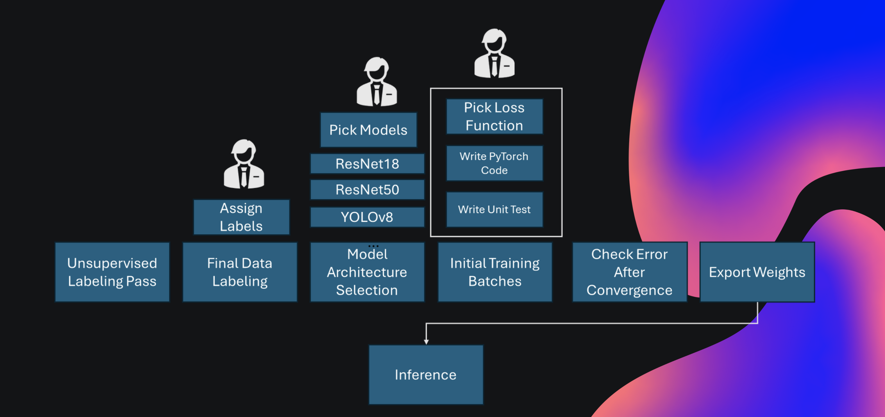

🧠Automating Loss Function Generation using LLMS and Agentic AI
This project automates a critical aspect of the neural network training pipeline: loss function generation. By leveraging large language models (LLMs) like CodeLlama, we dynamically generate PyTorch-compatible loss functions based on natural language task descriptions.
Objective
The goal of this research is to develop a system that automatically creates loss functions using LLMs and Agentic AI workflow concepts. By analyzing the problem statement or the machine learning task, the system will generate PyTorch compatible loss functions tailored to the task, improving adaptability and performance. The workflow would not only generate a compatible loss function but also validate it, resolve any potential bugs and only then provide it to the user. Unlike manually designed loss functions, which often require extensive trial and error, this approach automates the process, making model training more efficient and reducing human effort.
Methodology
Leveraged CodeLlama-7B-Instruct to generate PyTorch-compatible loss functions based on task descriptions using a chat-style prompt format. Deployed the model on Rutgers University's Amarel HPC cluster for GPU-accelerated generation. Integrated a validation pipeline that performs syntax checking, unit testing, and automated retries for faulty outputs. Designed an agent-based feedback loop to classify and refine error classification and correction, improving function quality over time. Used PlantUML diagrams to visualize the workflow, and structured the workflow into inner and outer loops.

Tools & Technologies
- PyTorch – for building and training deep learning models
- Hugging Face Transformers – to access and run the CodeLlama-7B-Instruct model
- CodeLlama-7B-Instruct – LLM used for loss function generation
- Amarel HPC Cluster (Rutgers) – GPU-accelerated environment for running LLMs
- PlantUML – to visualize workflow architecture and system design
- Python (re, unittest, torch) – for prompt engineering, validation, and testing
Outcome
Successfully built an automated pipeline that generates, validates, and refines custom loss functions using LLMs, reducing manual effort and improving model adaptability across diverse tasks.

Here in the image you can see how it failed to generate a loss function in the first attempt. Then it figured out where the error occured and was able to rectify the code in the next attempt